目次 > ゲームについて > シミュレーション攻略 > SPORE > コレクション一覧 > 文明ステージ
| 概要 | 情報 | ステージ攻略 |
| コレクション一覧 | 継承アビリティー一覧 | アチーブメント一覧 |
| SPORE 攻略へ | 目次へ戻る |
| [ 細胞ステージ ] [ クリーチャーステージ ] [ 集落ステージ ] [ 文明ステージ ] [ 宇宙ステージ ] |
| [ 1 ] [ 2 ] [ 3 ] |
| 施設 |
| 名前 | 画像 | 費用 |
| シティーホール | ||
| 家 | 1600 | |
| 娯楽施設 | 800 | |
| 工場 | 1200 | |
| 砲台 | 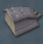 | 2000 |
| 名前 | 画像 | 費用 |
| 施設(装飾) |
| 名前 | 画像 | 費用 |
| キグルス・グリーン | 25 | |
| バウンシー・ボタニー | 25 | |
| シム・フローラ | 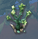 | 25 |
| グリーン・テンタクル | 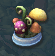 | 25 |
| フォリッジ・フォリー | 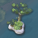 | 25 |
| ブルーム・オブ・ウーフォリア | 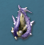 | 25 |
| ブレザー・シュラブ | 25 | |
| バックスラッピング・ブッシュ | 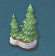 | 25 |
| スナッピー・スプラウト | 25 | |
| フェステビティ・ファウンテン | 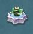 | 25 |
| スラップスティック・スプリング | 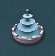 | 25 |
| ガッシング・マイルズ | 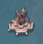 | 25 |
| イリプレサブル・イルミネイション | 25 | |
| ライトハーテッド | 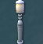 | 25 |
| ランプ・オブ・ディライト | 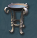 | 25 |
| 名前 | 画像 | 費用 |
| 乗り物 |
| 名前 | 画像 | 費用 |
| 陸上ビーグル | 1000 | |
| 海上ビーグル | 1500 | |
| 飛行機 | 3000 | |
| 名前 | 画像 | 費用 |
| [ 1 ] [ 2 ] [ 3 ] |
| [ 細胞ステージ ] [ クリーチャーステージ ] [ 集落ステージ ] [ 文明ステージ ] [ 宇宙ステージ ] |
| 概要 | 情報 | ステージ攻略 |
| コレクション一覧 | 継承アビリティー一覧 | アチーブメント一覧 |
| ページの上部へ | SPORE 攻略へ | 目次へ戻る |